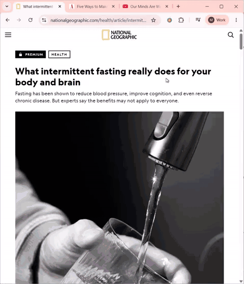
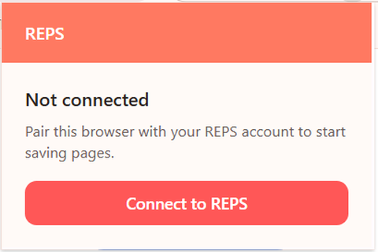
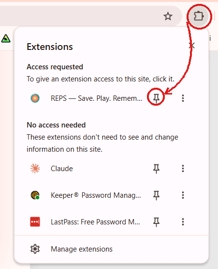
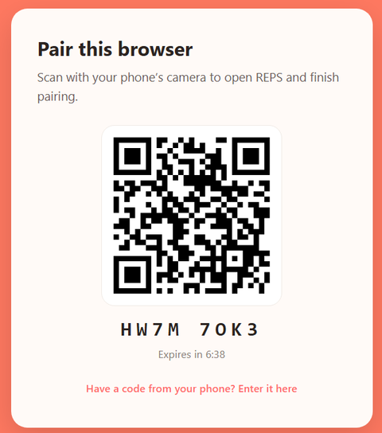
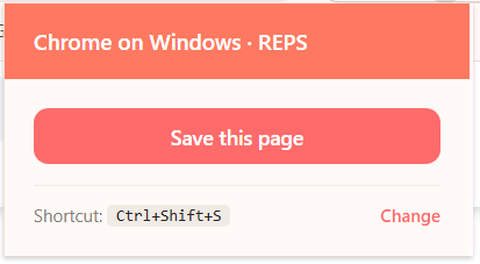

The REPS Chrome extension is live. One click on any article, video, or page you actually want to remember — and REPS turns it into reps on your phone.

Pairing your browser needs the latest TestFlight build. Takes ten seconds.
Update on TestFlight →One click in the Chrome Web Store. The REPS icon shows up in your browser bar.

Click the puzzle-piece icon in Chrome, find REPS, and hit the pin. Otherwise it hides behind the puzzle menu and you'll forget it's there.

Scan the QR with your phone. REPS opens, the browser pairs, and you're done — one time, about ten seconds.

Click the icon, or hit Ctrl+Shift+S (⌘+Shift+S on Mac). Articles, YouTube videos, podcast pages — they land in your REPS as fresh reps before your next training session.

Click the REPS icon. The page lands in your vault.
Highlight text → right-click → "Save selection to REPS". Only the excerpt is captured.
Cmd+Shift+S on Mac. The current tab is saved without your hands leaving the keyboard.
No bulk scrapes. No passive tracking. The extension only reads the URL, title, or selection you explicitly save — and sends it straight to your own REPS account. Your reading history stays your reading history.
Reminder · update REPS on TestFlight before you pair.
Save it or lose it. Most people lose it.